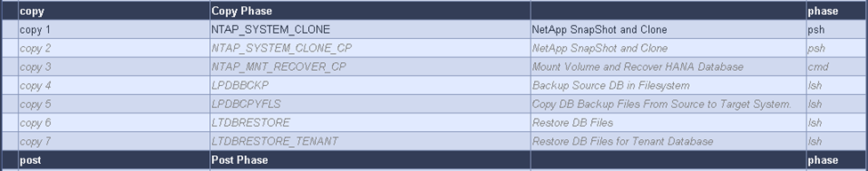
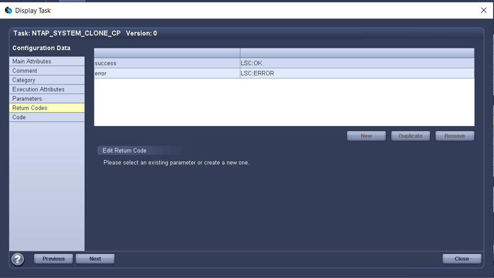
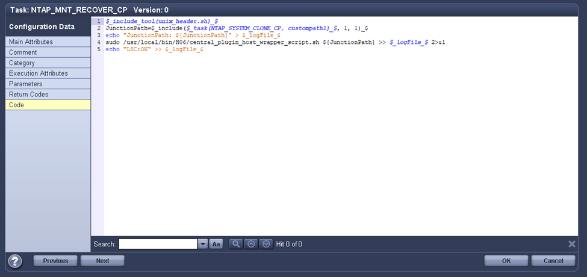
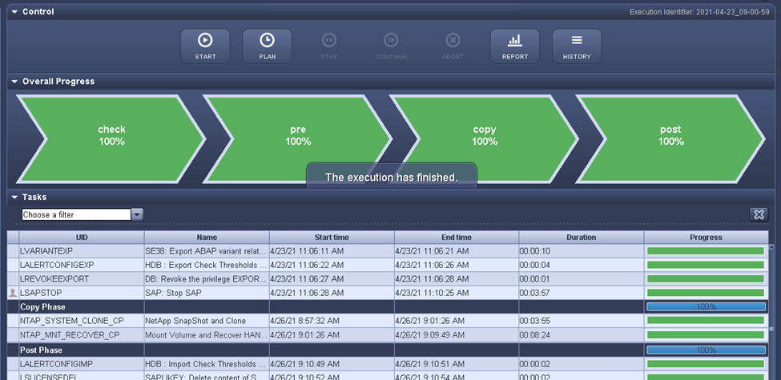

ドキュメントの変更をリクエスト
ドキュメントの変更をリクエスト GitHub で編集
GitHub で編集 寄稿者向けガイド
寄稿者向けガイドLSCおよびSnapCenter でSAP HANAシステムが更新されます
このセクションでは、LSCをNetApp SnapCenter に統合する方法について説明します。LSCとSnapCenter の統合では、SAPでサポートされるすべてのデータベースがサポートされます。ただし、SAP HANAはSAP AnyDBでは使用できない中央通信ホストを提供するため、SAP AnyDBとSAP HANAを区別する必要があります。
SAP AnyDB用のデフォルトのSnapCenter エージェントとデータベースプラグインのインストールは、データベースサーバ用の対応するデータベースプラグインに加えて、SnapCenter エージェントからのローカルインストールです。
このセクションでは、例として、LSCとSnapCenter の統合についてSAP HANAデータベースを使用して説明します。前述したSAP HANAの場合、SnapCenter エージェントとSAP HANAデータベースプラグインのインストール方法は2つあります。
-
*標準のSnapCenter エージェントとSAP HANA Plug-inのインストール。*標準のインストールでは、SnapCenter エージェントとSAP HANAプラグインはSAP HANAデータベースサーバにローカルでインストールされます。
-
*中央通信ホストを使用するSnapCenter のインストール。*中央通信ホストは、SnapCenter エージェント、SAP HANAプラグイン、および複数のSAP HANAシステムのSAP HANAデータベースのバックアップとリストアに必要なすべてのデータベース関連操作を処理するHANAデータベースクライアントとともにインストールされます。したがって、中央通信ホストに完全なSAP HANAデータベースシステムをインストールする必要はありません。
これらの異なるSnapCenter エージェントとSAP HANAデータベースプラグインのインストールオプションの詳細については、テクニカルレポートを参照してください "TR-4614 ：『 SAP HANA Backup and Recovery with SnapCenter 』"。
次の項では、標準インストールまたは中央通信ホストを使用したLSCとSnapCenter の統合の違いについて説明します。特に、インストールオプションと使用するデータベースに関係なく、強調表示されない設定手順はすべて同じです。
ソースデータベースからSnapshotコピーベースの自動バックアップを実行し、新しいターゲットデータベースのクローンを作成するには、LSCとSnapCenter の説明された統合では、で説明されている設定オプションとスクリプトが使用されます "TR-4667：『Automating SAP HANA System Copy and Clone Operations with SnapCenter 』"。
概要
次の図に、LSCを使用しないSnapCenter によるSAPシステムの更新ライフサイクルの一般的なワークフローを示します。
-
ターゲットシステムの初期インストールと準備を1回だけ行います。
-
手動前処理（ライセンス、ユーザー、プリンターなどのエクスポート）。
-
必要に応じて、ターゲットシステム上の既存のクローンを削除します。
-
ソースシステムの既存のSnapshotコピーを、SnapCenter によって実行されるターゲットシステムにクローニングすること。
-
SAP後処理の手動操作（ライセンスのインポート、ユーザー、プリンタ、バッチジョブの無効化など）。
-
その後、システムをテストシステムまたはQAシステムとして使用できます。
-
新しいシステムの更新が要求されると、手順2でワークフローが再開されます。
SAPをご利用のお客様は、次の図に示す手動の手順が緑で表示されているため、時間がかかり、ミスが発生しやすくなっています。LSCとSnapCenter の統合を使用する場合、これらの手動手順は、信頼性の高い反復可能な方法でLSCを使用して実行されます。この方法では、内部および外部の監査に必要なすべてのログが使用されます。
次の図は、SnapCenterベースのSAPシステム更新手順 の概要を示しています。

前提条件および制限事項
次の前提条件を満たしている必要があります。
-
SnapCenter をインストールする必要があります。ソースシステムとターゲットシステムは、標準インストールまたは中央通信ホストを使用して、SnapCenter で設定する必要があります。Snapshotコピーはソースシステム上に作成できます。
-
次の図に示すように、SnapCenter でストレージバックエンドが正しく設定されている必要があります。

次の2つの図は、SnapCenter エージェントとSAP HANAプラグインが各データベースサーバでローカルにインストールされる標準インストールを示しています。
SnapCenter エージェントと適切なデータベースプラグインをソースデータベースにインストールする必要があります。

SnapCenter エージェントと適切なデータベースプラグインをターゲット・データベースにインストールする必要があります。

次の図は、SnapCenter エージェント、SAP HANAプラグイン、およびSAP HANAデータベースクライアントが一元化されたサーバ（SnapCenter サーバなど）にインストールされ、ランドスケープ内の複数のSAP HANAシステムを管理する、中央通信ホスト環境を示しています。
SnapCenter エージェント、SAP HANAデータベースプラグイン、およびHANAデータベースクライアントが、中央の通信ホストにインストールされている必要があります。

Snapshotコピーを正常に作成できるように、SnapCenter でソースデータベースのバックアップが適切に設定されている必要があります。

LSCマスターおよびLSCワーカーがSAP環境にインストールされている必要があります。この展開では、SnapCenter サーバにLSCマスターをインストールし、ターゲットのSAPデータベースサーバにLSCワーカーをインストールします。このサーバは更新する必要があります。詳細については、「」を参照してください[Lab setup]」
ドキュメント：
ラボのセットアップ
このセクションでは、デモデータセンターでセットアップされたアーキテクチャの例について説明します。セットアップは、標準的なインストールと、中央の通信ホストを使用したインストールに分かれています。
標準インストール
次の図に、SnapCenter エージェントとデータベースプラグインが、ソースおよびターゲットのデータベースサーバ上にローカルにインストールされた標準インストールを示します。このラボ環境では、SAP HANA Plug-inをインストールしました。また、ターゲットサーバにLSCワーカーもインストールされています。簡素化と仮想サーバ数の削減のために、SnapCenter サーバにLSCマスターをインストールしました。次の図は、各種コンポーネント間の通信を示しています。

セントラルコミュニケーションホスト
次の図に、中央通信ホストを使用した設定を示します。この構成では、SnapCenter エージェントとSAP HANA Plug-inおよびHANAデータベースクライアントを専用サーバにインストールしました。このセットアップでは、SnapCenter サーバを使用して中央通信ホストをインストールしました。さらに、LSCワーカーが再びターゲットサーバにインストールされました。簡素化と仮想サーバ数の削減のため、SnapCenter サーバにLSCマスターもインストールすることにしました。次の図に、異なるコンポーネント間の通信を示します。

Libelle SystemCopyの初期1回限りの準備手順
LSCインストールには、次の3つの主要コンポーネントがあります。
-
*LSC master.*という名前が示すように、Libelleベースのシステムコピーの自動ワークフローを制御するマスターコンポーネントです。デモ環境では、LSCマスターがSnapCenter サーバにインストールされています。
-
* LSCワーカー。* LSCワーカーは、通常はターゲットSAPシステムで実行されるLibelleソフトウェアの一部であり、自動システムコピーに必要なスクリプトを実行します。デモ環境では、ターゲットのSAP HANAアプリケーションサーバにLSCワーカーがインストールされています。
-
* LSC衛星。* LSC衛星は、それ以降のスクリプトを実行する必要があるサードパーティシステム上で実行されるLibelleソフトウェアの一部です。LSCマスターは、LSCサテライトシステムの役割も同時に果たすことができます。
次の図に示すように、最初にLSC内のすべての関連システムを定義しました。
-
* 172.30.15.35.* SAPソースシステムとSAP HANAソースシステムのIPアドレス。
-
*172.30.15.3.*この構成のLSCマスターおよびLSCサテライトシステムのIPアドレス。SnapCenter サーバにLSCマスターをインストールしたため、SnapCenter サーバのインストール時にインストールされたSnapCenter 4.x PowerShellコマンドレットは、このWindowsホストですでに使用できます。そのため、このシステムに対してLSCサテライトロールを有効にし、このホストですべてのSnapCenter PowerShellコマンドレットを実行することにしました。別のシステムを使用する場合は、SnapCenter のマニュアルに従って、このホストにSnapCenter PowerShellコマンドレットをインストールしてください。
-
172.30.15.36 SAPデスティネーションシステム、SAP HANAデスティネーションシステム、およびLSCワーカーのIPアドレス。
IPアドレス、ホスト名、完全修飾ドメイン名の代わりに使用することもできます。
次の図は、マスタ、ワーカー、サテライト、SAPソース、SAPターゲットのLSC構成を示しています。 ソースデータベースおよびターゲットデータベース。

メイン統合のためには、設定手順を標準インストールと中央通信ホストを使用したインストールに再度分ける必要があります。
標準インストール
このセクションでは、SnapCenter エージェントと必要なデータベースプラグインがソースシステムとターゲットシステムにインストールされている標準インストールを使用する場合に必要な設定手順について説明します。標準インストールを使用する場合は、クローンボリュームのマウントおよびターゲットシステムのリストアとリカバリに必要なすべてのタスクが、サーバ自体のターゲットデータベースシステムで実行されているSnapCenter エージェントから実行されます。これにより、SnapCenter エージェントの環境変数を使用して、クローン関連の詳細情報にアクセスできるようになります。したがって、LSCコピーフェーズでは、追加のタスクを1つだけ作成する必要があります。このタスクでは、ソース・データベース・システムでSnapshotコピーの処理を実行し、ターゲット・データベース・システムでクローンおよびリストアおよびリカバリの処理を実行します。SnapCenter に関連するすべてのタスクは、LSCタスク「NTAP_SYSTEM_CLONE」に入力されたPowerShellスクリプトを使用してトリガーされます。
次の図は、コピーフェーズのLSCタスクの設定を示しています。

次の図は’NTAP_SYSTEM_CLONEプロセスの構成を示していますPowerShellスクリプトを実行するため、このWindows PowerShellスクリプトはサテライトシステム上で実行されます。この場合、これは、サテライトシステムとしても機能する、インストールされたLSCマスターを持つSnapCenter サーバです。

LSCは、Snapshotコピー、クローニング、およびリカバリ処理が成功したかどうかを認識する必要があるため、少なくとも2つの戻りコードタイプを定義する必要があります。次の図に示すように、1つのコードはスクリプトを正常に実行するためのもので、もう1つのコードはスクリプトの実行に失敗するためのものです。
-
実行が成功した場合は、スクリプトから標準出力に「LSC：OK」を書き込む必要があります。
-
実行に失敗した場合は、スクリプトから標準出力に「LSC：error」を書き込む必要があります。

次の図は、ソースデータベースシステムでSnapshotベースのバックアップを実行し、ターゲットデータベースシステムでクローンを実行する、PowerShellスクリプトの一部です。このスクリプトは、完全なものではありません。このスクリプトでは、LSCとSnapCenter の統合がどのように表示されるか、および設定がどの程度簡単かを示します。

スクリプトはLSCマスター（サテライトシステムでもある）上で実行されるため、SnapCenter サーバ上のLSCマスターは、SnapCenter でバックアップおよびクローニング操作を実行するための適切な権限を持つWindowsユーザとして実行する必要があります。ユーザに適切な権限があるかどうかを確認するには、SnapCenter UIでSnapshotコピーとクローンを実行できる必要があります。
SnapCenter サーバ自体でLSCマスターおよびLSCサテライトを実行する必要はありません。LSCマスターおよびLSCサテライトは、任意のWindowsマシンで実行できます。LSCサテライトでPowerShellスクリプトを実行するための前提条件は、SnapCenter PowerShellコマンドレットがWindowsサーバにインストールされていることです。
セントラルコミュニケーションホスト
中央通信ホストを使用してLSCとSnapCenter の間で統合する場合、コピーフェーズで実行する必要がある調整のみが実行されます。Snapshotコピーとクローンは、中央通信ホスト上のSnapCenter エージェントを使用して作成されます。したがって、新しく作成されたボリュームに関するすべての詳細情報は、ターゲットデータベースサーバではなく、中央通信ホストでのみ使用できます。ただし、これらの詳細は、クローンボリュームをマウントしてリカバリを実行するために、ターゲットデータベースサーバ上に必要です。これは、コピーフェーズで追加のタスクが2つ必要になる理由です。1つのタスクが中央通信ホストで実行され、1つのタスクがターゲットデータベースサーバで実行されます。これら2つのタスクを次の図に示します。
-
* NTAP _ SYSTEM_CLONE_CP。このタスクでは、中央通信ホストで必要なSnapCenter 機能を実行するPowerShellスクリプトを使用して、Snapshotコピーおよびクローンを作成します。したがって、このタスクはLSCサテライト上で実行されます。この場合、このインスタンスはWindows上で実行されるLSCマスターです。このスクリプトは、クローンおよび新しく作成されたボリュームに関するすべての詳細を収集し、2番目のタスク「NTAP_Mnt_RECOVER_CP」に渡します。このタスクは、ターゲットデータベースサーバで実行されるLSCワーカーで実行されます。
-
* NTAP_Mnt_RECOVER_CP。*このタスクは、ターゲットSAPシステムとSAP HANAデータベースを停止し、古いボリュームをアンマウントして、前のタスク「NTAP_SYSTEM_CLONE_CP」から渡されたパラメータに基づいて、新しく作成されたストレージクローンボリュームをマウントします。その後、ターゲットのSAP HANAデータベースがリストアおよびリカバリされます。

次の図は’タスク’NTAP_SYSTEM_CLONE_CP’の構成を示していますこれは、サテライトシステムで実行されるWindows PowerShellスクリプトです。この場合、サテライトシステムは、インストールされたLSCマスターを持つSnapCenter サーバになります。

LSCは、Snapshotコピーおよびクローニング処理が成功したかどうかを認識する必要があるため、次の図に示すように、少なくとも2つの戻りコードタイプを定義する必要があります。スクリプトを正常に実行するには1つの戻りコードタイプ、スクリプトの実行に失敗するにはもう1つの戻りコードタイプです。
-
実行が成功した場合は、スクリプトから標準出力に「LSC：OK」を書き込む必要があります。
-
実行に失敗した場合は、スクリプトから標準出力に「LSC：error」を書き込む必要があります。

次の図は、中央通信ホスト上のSnapCenter エージェントを使用してSnapshotコピーとクローンを実行するために実行する必要があるPowerShellスクリプトの一部を示しています。このスクリプトは完了することを意図したものではありません。代わりに、スクリプトを使用して、LSCとSnapCenter の統合がどのように見えるか、および設定がどの程度簡単かを示します。

前述したように、クローンボリュームの名前を次のタスク「NTAP_Mnt_RECOVER_CP」に渡して、ターゲットサーバでクローンボリュームをマウントする必要があります。クローン・ボリュームの名前（ジャンクション・パスとも呼ばれます）は変数「$JunctionalPath」に格納されます。後続のLSCタスクへの引き渡しは、カスタムのLSC変数によって行われます。
echo $JunctionPath > $_task(current, custompath1)_$
スクリプトはLSCマスター（サテライトシステムでもある）上で実行されるため、SnapCenter サーバ上のLSCマスターは、SnapCenter でバックアップおよびクローニング操作を実行するための適切な権限を持つWindowsユーザとして実行する必要があります。適切な権限があるかどうかを確認するには、ユーザがSnapCenter GUIでSnapshotコピーとクローンを実行できる必要があります。
次の図は’NTAP_Mnt_RECOVER_CP’タスクの構成を示していますLinuxシェルスクリプトを実行するため、これはターゲットデータベースシステムで実行されるコマンドスクリプトです。

LSCは、クローンボリュームのマウントを認識し、ターゲットデータベースのリストアとリカバリが成功したかどうかを確認する必要があるため、少なくとも2つの戻りコードタイプを定義する必要があります。1つはスクリプトを正常に実行するためのコードで、1つはスクリプトの実行に失敗したコードです。次の図に示します。
-
実行が成功した場合は、スクリプトから標準出力に「LSC：OK」を書き込む必要があります。
-
実行に失敗した場合は、スクリプトから標準出力に「LSC：error」を書き込む必要があります。

次の図に、Linux Shellスクリプトの一部を示します。このスクリプトでは、ターゲットデータベースの停止、古いボリュームのアンマウント、クローンボリュームのマウント、ターゲットデータベースのリストアとリカバリを行います。前のタスクでは、ジャンクションパスがLSC変数に書き込まれました。次のコマンドはこのLSC変数を読み取り、値をLinuxシェルスクリプトの「$JunctionalPath」変数に格納します。
JunctionPath=$_include($_task(NTAP_SYSTEM_CLONE_CP, custompath1)_$, 1, 1)_$
ターゲットシステム上のLSCワーカーは「<sidaadm>`」として実行されますが、マウントコマンドはrootユーザとして実行する必要があります。したがって’central_plugin_host_wrapper_script.shを作成する必要がありますスクリプト「central_plugin_host_wrapper_script.sh」は、「sudo」コマンドを使用して「NTAP_Mnt_recovery_CP」タスクから呼び出されます。スクリプトは’sudoコマンドを使用してUID 0で実行され’古いボリュームのアンマウント’クローンボリュームのマウント’ターゲット・データベースのリストアとリカバリなど’以降のすべての手順を実行できますsudoを使用してスクリプト実行を有効にするには'/etc/sudoers’に次の行を追加する必要があります
hn6adm ALL=(root) NOPASSWD:/usr/local/bin/H06/central_plugin_host_wrapper_script.sh

SAP HANAシステムの更新処理
LSCとNetApp SnapCenter の間の必要な統合タスクがすべて実行されたので、完全に自動化されたSAPシステム更新を開始するのはワンクリックタスクです。
次の図は’標準インストールにおけるNTAP `_`SYSTEM`_CLONE」タスクを示していますこの出力からわかるように、Snapshotコピーとクローンを作成し、クローンボリュームをターゲットデータベースサーバにマウントし、ターゲットデータベースのリストアとリカバリには約14分かかりました。SnapshotとNetApp FlexCloneテクノロジを使用すれば、ソースデータベースのサイズに関係なく、このタスクの所要時間はほぼ同じです。

次の図に、セントラル通信ホストを使用する場合の「NTAP_SYSTEM_CLONE_CP」と「NTAP_Mnt_RECOVERY_CP」の2つのタスクを示します。この出力からわかるように、Snapshotコピー、クローン、ターゲットデータベースサーバへのクローンボリュームのマウント、ターゲットデータベースのリストアとリカバリには約12分かかりました。これは、標準インストールを使用する場合に、これらの手順を実行するのに必要な時間と同じか、それより短くなります。繰り返しになりますが、SnapshotとNetApp FlexCloneテクノロジを使用すれば、ソースデータベースのサイズに関係なく、これらのタスクを短時間で一貫して実行できます。
